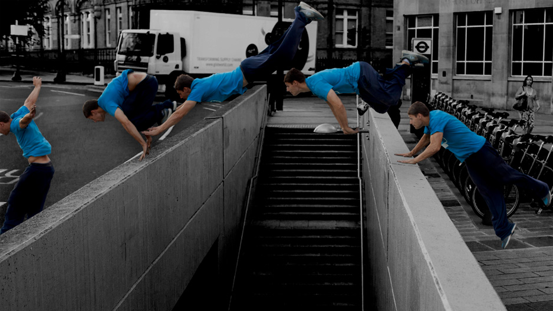
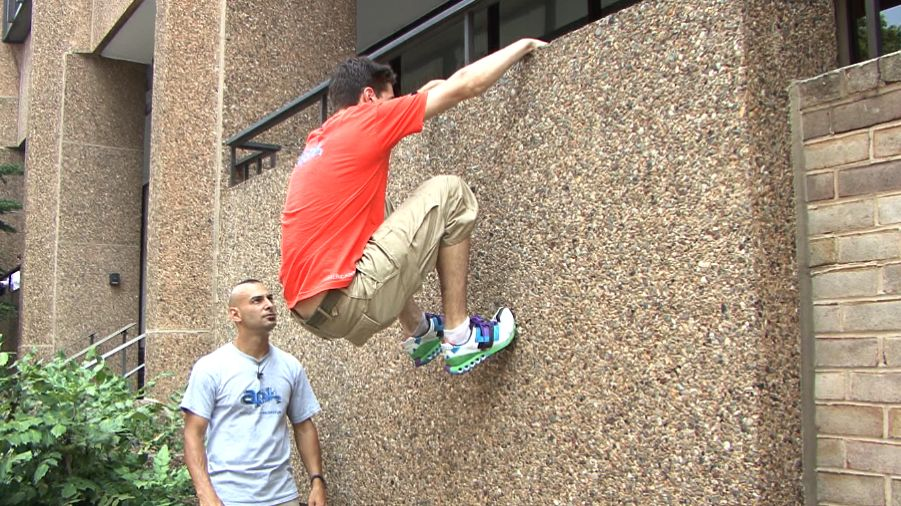
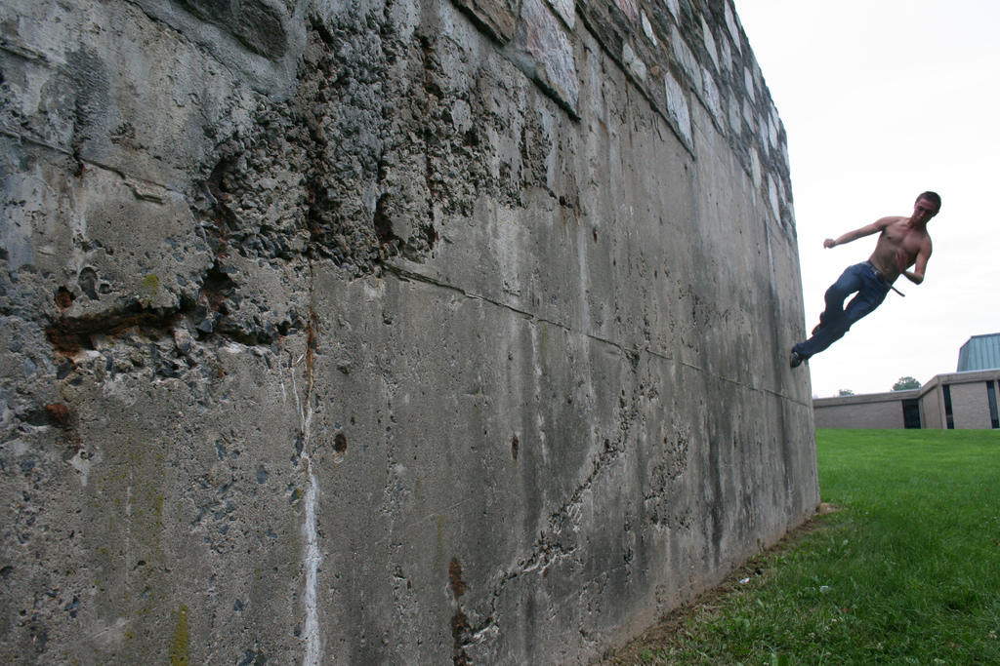
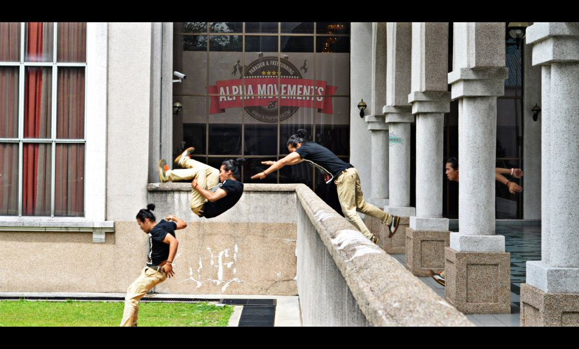

Tricks
Kong Vault
 The Kong Vault (also known as the Cat Pass, Monkey Vault, or Kong Leap) is a movement used in Parkour and freerunning for moving over an object and gaining distance. Kongs are useful for moving over long objects, such as large barriers. The same movement can be used to move over rails and fences. Kong Vaults are commonly used for distance and power, instead of speed. Though they take extra time to learn, they are one of the most common and should be trained early on. There are a number of variations of the Kong Vault. Take note that when you use the Kong Vault, you have to dive towards the obstacle the Kong Vault will be performed on such as a picnic bench.
Cat Leap
 The Cat Leap (also known as the arm leap or arm jump) is a technique used in Parkour and Freerunning to land on a vertical object, such as a ledge, a wall, or a fence. Cat leaps are one of the most common techniques used, and should be learned and practiced at an early stage. They can be done from a running jump, a precision, a lache or a number of other techniques.
Wallrun and Tic Tac
 The Wall Run is a widely used movement in Parkour, used to get over a wall too high for a vault. It is also used in Freerunning ( Wallflips are based on wallruns). The horizontal wall run, or tic tac, allows a traceur to overcome a gap or other obstacle in which running over the ground would be difficult or impossible.
Front Flip
 A Front Flip is a movement used in Freerunning and tricking. The term "Frontflip" can actually refer to several different types of flip, but always refers to a flip rotates forwards (not necessarily moving forwards; gainers are not considered frontflips whereas losers are). Front Flips have very little practical use in Parkour, (the exception being getting over an obstacle without touching it) but are commonly used Freerunners and Trickers.